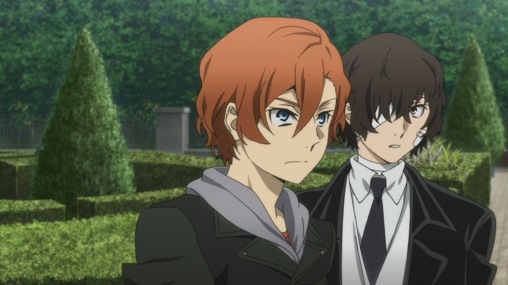
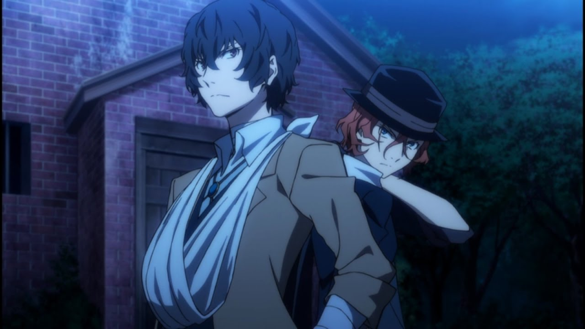

Esse episodio foi um dos mais esparados por mim. Eu li o mangá quando estava lançando, então o anime vem muito tempo depois.
Nesse episodio um dos meus personagens favoritos faz sua primeira aparição e eu estava muito ansiosa para quais as
cores iriam colocar na animação.
Tempora 3, episodio 1

O início da melhor temporada do anime. Nesse episodio mostra o passado de dois personagens iconicos de BSD, o Chuuya e o Dazai.
Mostra como começou a "amizade" dos dois e com qual idade também, o que explica muitos acontecimentos da série.
Temporada 2, episodio 9

Antes do início da terceira temporada, não tinhamos muitas cenas do Dazai e do Chuuya trabalhando juntos. Nesse episodio eles
lutam juntos contra o monstro do LoveCraft e mostra como o Chuuya, apesar de tudo, ainda confia de olhos fechados no Dazai.